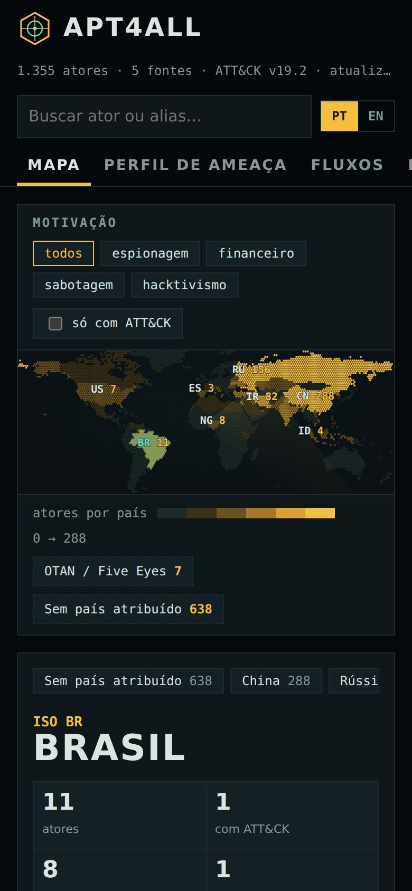

Do zero ao perfil de ameaça
From zero to a threat profile
Este manual é para quem nunca usou o APT4ALL, inclusive quem não é da área. Cada parte termina com uma ação. Faça, marque e siga.
This manual is for anyone who has never used APT4ALL, including people outside security. Each part ends with one action. Do it, tick it, move on.
01Em 30 segundosIn 30 seconds
Grupos de ataque têm vários nomes: cada empresa de segurança batiza do seu jeito. O APT4ALL junta 5 fontes abertas, descobre quais nomes são o mesmo grupo e mostra tudo num mapa. Você clica num país e vê quem é atribuído a ele; clica num grupo e vê todos os nomes, o que ele faz e onde ler mais. Na aba Perfil de ameaça, diz onde e em que setor trabalha, e o Atlas mostra quem costuma atacar organizações assim.
Attack groups have many names: each security vendor names them its own way. APT4ALL merges 5 open sources, works out which names are the same group and shows everything on a map. Click a country to see who is attributed to it; click a group to see all its names, what it does and where to read more. In the Threat profile tab, say where and in which sector you work, and the Atlas shows who usually attacks organizations like that.
02InstalarInstall
Não precisa instalar nada para usar online. Para usar sem internet, siga a aba do seu sistema.
Nothing to install to use it online. To use it offline, follow your system's tab.
- Abra ridd1kulusc0d3r.github.io/apt4all no navegador (computador ou celular).Open ridd1kulusc0d3r.github.io/apt4all in your browser (computer or phone).
- Clique em Abrir o Atlas. Pronto.Click Open the Atlas. Done.
- Instale o Python em python.org/downloads. Na primeira tela do instalador, marque “Add python.exe to PATH”.Install Python from python.org/downloads. On the installer's first screen, tick “Add python.exe to PATH”.
- No GitHub do projeto, clique em Code → Download ZIP. Clique com o botão direito no ZIP e escolha Extrair tudo.On the project's GitHub, click Code → Download ZIP. Right-click the ZIP and choose Extract All.
- Na pasta extraída, dê dois cliques em
iniciar-windows.bat. Se o Windows avisar “O Windows protegeu o computador”, clique em Mais informações → Executar assim mesmo.In the extracted folder, double-clickiniciar-windows.bat. If Windows says “Windows protected your PC”, click More info → Run anyway. - O navegador abre sozinho. Para fechar, feche a janela preta.The browser opens by itself. To stop, close the black window.
- Instale o Python em python.org/downloads (o macOS não traz um atualizado).Install Python from python.org/downloads (macOS does not ship an up-to-date one).
- Baixe o ZIP do projeto (Code → Download ZIP) e dê dois cliques para descompactar.Download the project ZIP (Code → Download ZIP) and double-click it to unzip.
- Na primeira vez: botão direito em
iniciar-mac.command→ Abrir → Abrir. Das próximas vezes, dois cliques bastam.First time: right-clickiniciar-mac.command→ Open → Open. After that, double-clicking is enough. - Se aparecer “permissão negada”, abra o Terminal na pasta e rode
chmod +x iniciar-mac.command.If you see “permission denied”, open Terminal in the folder and runchmod +x iniciar-mac.command.
- O Python 3 já vem na maioria das distribuições. Confira com
python3 --version(precisa ser 3.9 ou mais novo).Python 3 ships with most distributions. Check withpython3 --version(needs 3.9 or newer). git clone https://github.com/Ridd1kulusC0d3r/apt4all cd apt4all ./iniciar-linux.sh- No gerenciador de arquivos, dois cliques em
iniciar-linux.shtambém funcionam (escolha Executar).In your file manager, double-clickinginiciar-linux.shalso works (choose Run).
03Como funcionaHow it works
Fontes abertas entram, um script junta os nomes, as páginas mostram. Toda segunda o GitHub refaz isso sozinho.
Open sources go in, a script merges the names, the pages show the result. Every Monday GitHub redoes it automatically.
04Uso guiadoGuided tour
Oito telas, na ordem em que você vai usar. Os números em âmbar na imagem batem com a lista embaixo.
Eight screens, in the order you'll use them. The amber numbers on the image match the list below.
1. Página inicial
1. Home page
- 1Abrir o Atlas: a porta principal.Open the Atlas: the main door.
- 2PT / EN: troca o idioma de todas as páginas (fica lembrado).PT / EN: switches the language on every page (remembered).
- 3Números ao vivo: lidos da base na hora; se aparecer “—”, a base não carregou (veja Deu problema?).Live numbers: read from the dataset on load; if you see “—”, the dataset didn't load (see Trouble?).
2. Mapa e dossiê do país
2. Map and country dossier
- 1Busca: digite qualquer nome ou apelido (ex.:
Fancy Bear) e escolha na lista.Search: type any name or alias (e.g.Fancy Bear) and pick from the list. - 2Abas: Mapa, Perfil de ameaça, Ranking e Sobre os dados.Tabs: Map, Threat profile, Ranking and About the data.
- 3Motivação: filtra o mapa por espionagem, crime financeiro, sabotagem ou hacktivismo. Só com ATT&CK mostra só grupos com técnicas mapeadas.Motive: filters the map by espionage, financial crime, sabotage or hacktivism. ATT&CK only shows only groups with mapped techniques.
- 4Mapa: quanto mais âmbar, mais atores atribuídos ao país. O país escolhido fica verde-menta. Os botões embaixo abrem OTAN/Five Eyes e “sem país”.Map: the more amber, the more actors attributed to the country. The selected country turns mint. The buttons below open NATO/Five Eyes and “no country”.
- 5Dossiê do país: números, motivações, técnicas mais usadas, setores e países vitimados, e a lista de atores (com filtro) no fim.Country dossier: numbers, motives, top techniques, sectors and victim countries, and the actor list (filterable) at the bottom.
- 6Idioma do Atlas.Atlas language.
3. Ficha do ator
3. Actor card
- 1Nome, país atribuído e ID do ATT&CK.Name, attributed country and ATT&CK ID.
- 2Aviso de atribuição: país e nomes são afirmações de fornecedores; confirme na fonte.Attribution warning: country and names are vendor claims; confirm at the source.
- 3Nomes por fornecedor: a tabela que responde “como a Microsoft chama esse grupo?”.Names by vendor: the table that answers “what does Microsoft call this group?”.
- 4Nomes conhecidos: todos os apelidos das cinco fontes. Mais abaixo: descrição, técnicas (clicáveis), ferramentas, operações, vítimas, relatórios e referências.Known names: every alias across the five sources. Further down: description, techniques (clickable), tools, operations, victims, reports and references.
- 5Fechar (ou tecla Esc). O endereço da página muda para
#apt28: copie e mande para alguém.Close (or Esc). The page address changes to#apt28: copy it and send it to someone.
4. Perfil de ameaça
4. Threat profile
- 1País da organização: cada país é um botão. O número é quantos atores têm vítimas ali. Clicar de novo desmarca.Organization's country: each country is a button. The number is how many actors have victims there. Click again to clear.
- 2Outro país: digite para achar países fora da lista, ou use ver todos.Another country: type to find countries outside the list, or use show all.
- 3Setor, também em botões, com a contagem de atores.Sector, also as buttons, with the actor count.
- 4Incluir atores: todos, ou só os que têm país atribuído.Include actors: all, or only those with an attributed country.
- 5Resumo dos números: quantos entraram pelo país, quantos pelo setor e quantos pelos dois. A regra de pontos fica logo abaixo.Number summary: how many came in by country, by sector and by both. The scoring rule sits right below.
- 6Técnicas a cobrir primeiro: o número é quantos atores do perfil usam a técnica; a barra é o peso. Embaixo, os botões de baixar e Ver em fluxos.Techniques to cover first: the number is how many profile actors use the technique; the bar is the weight. Below, the download buttons and See in flows.
5. Fluxos (Sankey)
5. Flows (Sankey)
- 1Base: APT com ATT&CK, ou ferramentas de ransomware (Ransomware Tool Matrix).Dataset: APT with ATT&CK, or ransomware tools (Ransomware Tool Matrix).
- 2País de origem: ao escolher um país, a primeira coluna passa a mostrar os atores dele.Country of origin: once a country is picked, the first column shows its actors.
- 3Motivação e, abaixo, setor: filtros em botões, combináveis.Motive and, below, sector: button filters you can combine.
- 4Origem: quanto mais grossa a fita, mais usos de técnica saem dali.Origin: the thicker the ribbon, the more technique uses come from there.
- 5Tática: a fase do ataque (cores do começo ao fim da cadeia, do verde-água ao coral).Tactic: the attack phase (colors run from early to late in the chain, teal to coral).
- 6Técnica: as 18 mais usadas no recorte. O subtítulo diz que fatia do total elas representam.Technique: the 18 most used in the slice. The subtitle says what share of the total they represent.
6. Rede
6. Network
- 1Ator (ou gangue de ransomware). Passe o mouse para acender só as ligações dele; clique para abrir a ficha.Actor (or ransomware gang). Hover to light up only its links; click to open its card.
- 2Técnica (ou ferramenta). Quanto mais no centro, mais atores a usam. A cor é a tática (ou a categoria da ferramenta).Technique (or tool). The closer to the center, the more actors use it. The color is the tactic (or tool category).
- 3Tamanho: 8, 12 ou 16 atores. Menos nós deixa a leitura mais fácil.Size: 8, 12 or 16 actors. Fewer nodes read more easily.
7. Ranking
7. Ranking
- 1Cabeçalhos clicáveis: ordenam por atores, com ATT&CK, apelidos ou relatórios.Clickable headers: sort by actors, with ATT&CK, aliases or reports.
- 2Linha: clique para abrir o dossiê do país no mapa.Row: click to open the country dossier on the map.
8. Recursos
8. Resources
- 1Busca por nome, descrição ou endereço.Search by name, description or address.
- 2Categorias: 21, de “Comece aqui” a “Canais”.Categories: 21, from “Start here” to “Channels”.
- 3Filtros: ★ comece por aqui, só ativos, só gratuitos, só da lista original e só os novos.Filters: ★ start here, active only, free only, original list only and new only.
- 4Cartão: nome, para que serve, tipo (gratuito, pago...), e etiqueta legado quando o projeto parou.Card: name, what it is for, type (free, paid...), and a legacy tag when the project stopped.
No celular
On a phone

Tudo funciona no celular: o mapa fica em cima, o dossiê embaixo, e a ficha do ator ocupa a tela inteira. Gire o aparelho para ver o mapa maior.
Everything works on a phone: the map is on top, the dossier below, and the actor card fills the screen. Rotate the device for a bigger map.
Fancy Bear e confirme que abre a ficha do APT28.search for Fancy Bear and confirm it opens the APT28 card.05Caso demo: Banco IpêDemo case: Banco Ipê
O Banco Ipê é fictício: um banco médio brasileiro que quer saber por onde começar a defesa.
Banco Ipê is fictional: a mid-sized Brazilian bank that wants to know where to start its defense.
- No Atlas, aba Perfil de ameaça: clique em Brasil (já vem marcado) e em Financeiro.In the Atlas, Threat profile tab: click Brazil (already selected) and Finance.
- Resultado (base de 13/10/2026): 55 atores (10 com vítimas no Brasil, 47 que miram finanças, 2 nos dois) e 301 técnicas. No topo, APT38 (5 pontos: vítimas no Brasil, setor financeiro e perfil ATT&CK) e Hurricane Panda (4).Result (dataset of 2026-10-13): 55 actors (10 with victims in Brazil, 47 targeting finance, 2 both) and 301 techniques. At the top, APT38 (5 points: victims in Brazil, finance sector and ATT&CK profile) and Hurricane Panda (4).
- As cinco técnicas a cobrir primeiro:
T1204.002arquivo malicioso aberto pelo usuário,T1566.001anexo de spearphishing,T1059.001PowerShell,T1036.005nome de recurso legítimo imitado,T1105transferência de ferramentas.The five techniques to cover first:T1204.002malicious file opened by the user,T1566.001spearphishing attachment,T1059.001PowerShell,T1036.005legitimate resource name imitated,T1105ingress tool transfer. - Leitura para a diretoria: “o caminho mais comum começa no e-mail e num arquivo aberto por alguém; a prioridade é filtro de anexos, conscientização dirigida e visibilidade de PowerShell”.For the board: “the most common path starts with email and a file someone opens; the priority is attachment filtering, targeted awareness and PowerShell visibility”.
- Limite: só 10 atores têm vítimas brasileiras registradas nas fontes públicas. Complemente com CERT.br e relatórios de fornecedores com operação no Brasil.Limit: only 10 actors have recorded Brazilian victims in public sources. Complement with CERT.br and reports from vendors operating in Brazil.
06RelatóriosReports
O Atlas baixa dois arquivos. Pela linha de comando, a ferramenta da ponte gera quatro.
The Atlas downloads two files. From the command line, the bridge tool generates four.
| Arquivo | File | O que é | What it is | Abra com | Open with |
|---|---|---|---|---|---|
navigator.json | Camada com as técnicas do perfil, pintadas pelo pesoLayer with the profile's techniques, colored by weight | ATT&CK Navigator → Open Existing Layer | |||
tce-sinais.json | Sinal de inteligência candidato (não pesa até ser aceito)Candidate intelligence signal (no weight until accepted) | TCE | |||
tce-intelligence.csv | O mesmo sinal, em planilhaThe same signal, as a spreadsheet | tce environment-import-csv | |||
perfil.md | Relatório legível com atores, motivo de cada um e técnicasReadable report with actors, why each was included and techniques | Qualquer editor de texto, ou o GitHubAny text editor, or GitHub |
python3 ferramentas/tce/perfil_ameaca.py --pais BR --setor finance --saida saida/banco-ipe
python3 ferramentas/tce/perfil_ameaca.py --listar paisesnavigator.json do caso demo no ATT&CK Navigator.load the demo case's navigator.json into the ATT&CK Navigator.07Deu problema?Trouble?
| O que aparece | What you see | O que fazer | What to do |
|---|---|---|---|
| Atlas fica em “Carregando o atlas…”Atlas stays on “Loading the atlas…” | Você abriu o arquivo com dois cliques no index.html. O navegador bloqueia a leitura dos dados assim. Use o lançador (iniciar-*) ou a versão online.You opened index.html by double-clicking it. Browsers block data loading that way. Use the launcher (iniciar-*) or the online version. | ||
| Windows: “python não é reconhecido”Windows: “python is not recognized” | Reinstale o Python marcando Add python.exe to PATH, ou instale pela Microsoft Store.Reinstall Python ticking Add python.exe to PATH, or install it from the Microsoft Store. | ||
| macOS: “não pode ser aberto porque é de um desenvolvedor não identificado”macOS: “cannot be opened because it is from an unidentified developer” | Botão direito → Abrir → Abrir. Só na primeira vez.Right-click → Open → Open. First time only. | ||
| “Nenhuma porta livre”“No free port” | Outro programa usa as portas 8765 a 8794. Rode python3 iniciar.py --porta 9000.Another program uses ports 8765 to 8794. Run python3 iniciar.py --porta 9000. | ||
| O navegador não abriu sozinhoThe browser didn't open by itself | Copie o endereço mostrado na janela preta (http://localhost:8765/) e cole no navegador.Copy the address shown in the black window (http://localhost:8765/) and paste it into your browser. | ||
| Perfil diz “Nenhum ator com esse recorte”Profile says “No actor matches” | Troque o país ou o setor para “qualquer”. Países com poucas vítimas públicas aparecem só com 2 ou mais atores.Set country or sector to “any”. Countries with few public victims only appear with 2 or more actors. | ||
| Um grupo está com país ou apelido erradoA group has a wrong country or alias | Abra uma issue “Correção de ator” no GitHub com a fonte pública.Open an “Actor fix” issue on GitHub with the public source. |
08GlossárioGlossary
Ameaça persistente avançada: grupo com recursos e paciência, geralmente ligado a um Estado.
Advanced persistent threat: a well-resourced, patient group, usually state-linked.
Inteligência de ameaças cibernéticas: informação sobre adversários, analisada para orientar decisões.
Cyber threat intelligence: information about adversaries, analyzed to guide decisions.
Catálogo público da MITRE de técnicas de ataque (ex.: T1566 é phishing).
MITRE's public catalog of attack techniques (e.g. T1566 is phishing).
Táticas, técnicas e procedimentos: o comportamento do adversário, mais difícil de trocar que um endereço IP.
Tactics, techniques and procedures: adversary behavior, harder to change than an IP address.
Apelido. O mesmo grupo recebe nomes diferentes de cada fornecedor.
Alternate name. Each vendor gives the same group a different name.
Afirmar quem está por trás de um ataque. É hipótese com grau de confiança, não certeza.
Claiming who is behind an attack. A hypothesis with a confidence level, not a certainty.
Quem foi atacado: países, setores, tipos de organização.
Who was attacked: countries, sectors, organization types.
Recorte dos adversários mais relevantes para uma organização e das técnicas que usam.
The subset of adversaries most relevant to an organization and the techniques they use.
Ferramenta web da MITRE que pinta a matriz ATT&CK a partir de uma “camada” JSON.
MITRE's web tool that colors the ATT&CK matrix from a JSON “layer”.
Threat Context Engineering: modelagem de ameaças do ambiente inteiro; recebe o perfil como sinal.
Threat Context Engineering: whole-environment threat modeling; takes the profile as a signal.
Base aberta e comunitária de atores, usada por milhares de times de resposta.
Open community dataset of actors, used by thousands of response teams.
Traffic Light Protocol: cor que diz com quem a informação pode ser compartilhada.
Traffic Light Protocol: a color saying who information can be shared with.
09Seção técnicaTechnical section
Arquitetura
Architecture
Site estático em docs/ (HTML, CSS e JavaScript sem dependências; só as fontes tipográficas vêm do Google Fonts, com alternativa do sistema). Dados em JSON gerados por Python só com biblioteca padrão. Nada roda em servidor.
Static site in docs/ (dependency-free HTML, CSS and JavaScript; only the typefaces come from Google Fonts, with system fallbacks). JSON data generated by standard-library Python. Nothing runs server-side.
| Peça | Piece | Papel | Role |
|---|---|---|---|
ferramentas/atlas/construir_dados.py | Lê as 5 fontes, normaliza, junta por âncoras, classifica motivação e setor, liga relatórios, gera atores.json e paises.jsonReads the 5 sources, normalizes, merges by anchors, classifies motive and sector, links reports, writes atores.json and paises.json | ||
ferramentas/atlas/mapa_hex.py | Gera a grade hexagonal (passo de 2°, 4.472 hexágonos, 173 países) do Natural EarthBuilds the hex grid (2° step, 4,472 hexes, 173 countries) from Natural Earth | ||
ferramentas/ransomware/construir_matriz.py | Lê o Ransomware Tool Matrix (CC BY 4.0): 92 grupos, 347 ferramentas, 8 categorias; liga 39 grupos a atores do AtlasReads the Ransomware Tool Matrix (CC BY 4.0): 92 groups, 347 tools, 8 categories; links 39 groups to Atlas actors | ||
ferramentas/tce/perfil_ameaca.py | Mesma regra de pontos do Atlas; exporta Navigator, sinal TCE, CSV e relatórioSame scoring rule as the Atlas; exports Navigator, TCE signal, CSV and report | ||
ferramentas/recursos/*.py | Verifica links (HEAD/GET em paralelo) e gera RECURSOS.md e RESOURCES.mdChecks links (parallel HEAD/GET) and generates RECURSOS.md and RESOURCES.md | ||
iniciar.py | Servidor local em 127.0.0.1, procura porta livre e abre o navegadorLocal server on 127.0.0.1, finds a free port and opens the browser |
Regra de junção dos nomes
Name merging rule
Union-find puro junta tudo em cascata (Lazarus virava um bloco de 41 registros). O APT4ALL usa âncoras: primeiro os grupos do ATT&CK, depois planilha, MISP e EternalLiberty. Um registro entra num ator só pelo ID do ATT&CK, pelo nome principal, ou por apelidos que apontem para um único ator. Apelido reivindicado por dois atores vira ambíguo e para de ligar.
Plain union-find merges in cascade (Lazarus became a 41-record blob). APT4ALL uses anchors: ATT&CK groups first, then the sheet, MISP and EternalLiberty. A record joins an actor only by ATT&CK ID, by primary name, or by aliases pointing to a single actor. An alias claimed by two actors becomes ambiguous and stops linking.
Resultados dos testes
Test results
| Bateria | Suite | Testes | Tests | Resultado | Result |
|---|---|---|---|---|---|
python3 -m unittest discover -s testes | 47 | OK · 46 passarampassed, 1 pulado (TCE ausente)skipped (no TCE) | |||
Integração com o TCE (ambiente com tce)TCE integration (environment with tce) | 7 | OK · candidato = 0, aceito > 0candidate = 0, accepted > 0 | |||
Horizon, caso enterprise-identityHorizon, enterprise-identity case | 3 | OK · H2 → H1 com sinal aceitowith accepted signal | |||
| Navegador (Chromium, 1280×800 e 390×844)Browser (Chromium, 1280×800 and 390×844) | 27 | OK · sem erro de página, números do dossiê batem, rótulos sem sobreposiçãono page errors, dossier numbers match, no overlapping labels |
Detalhes em RELATORIO-DE-TESTES.md.
Details in RELATORIO-DE-TESTES.md (Portuguese).
Limites conhecidos
Known limits
- 638 atores sem país atribuído (crime cibernético e hacktivismo, em sua maioria).638 actors with no attributed country (mostly cybercrime and hacktivism).
- Vitimologia pública fraca para América Latina; o perfil para o Brasil é ponto de partida.Weak public victimology for Latin America; the Brazil profile is a starting point.
- Descrições vêm em inglês, da fonte original.Descriptions are in English, from the original source.
- Nomes de países no perfil seguem as fontes (em inglês).Country names in the profile follow the sources (in English).
Para refazer as telas deste manual: python3 ferramentas/manual/capturar_telas.py (precisa do Playwright, opcional).
To redo this manual's screenshots: python3 ferramentas/manual/capturar_telas.py (needs Playwright, optional).